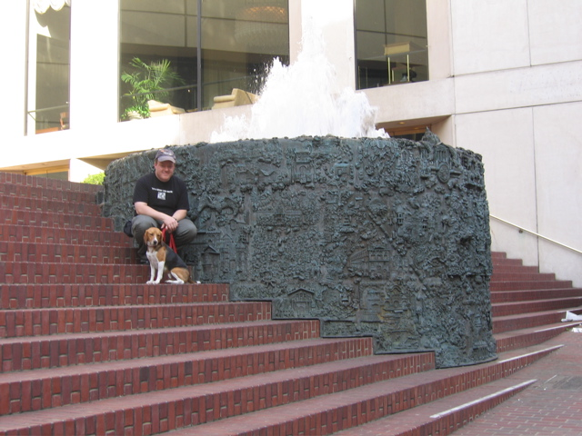

<--Previous
Up
Next-->

San Francisco Fountain
This fountain, outside of the Hyatt near Union Square, reproduces all of San Francisco in its details. Just to our left is Peanuts' Snoopy, who, Huxley agrees, doesn't look much like a beagle.